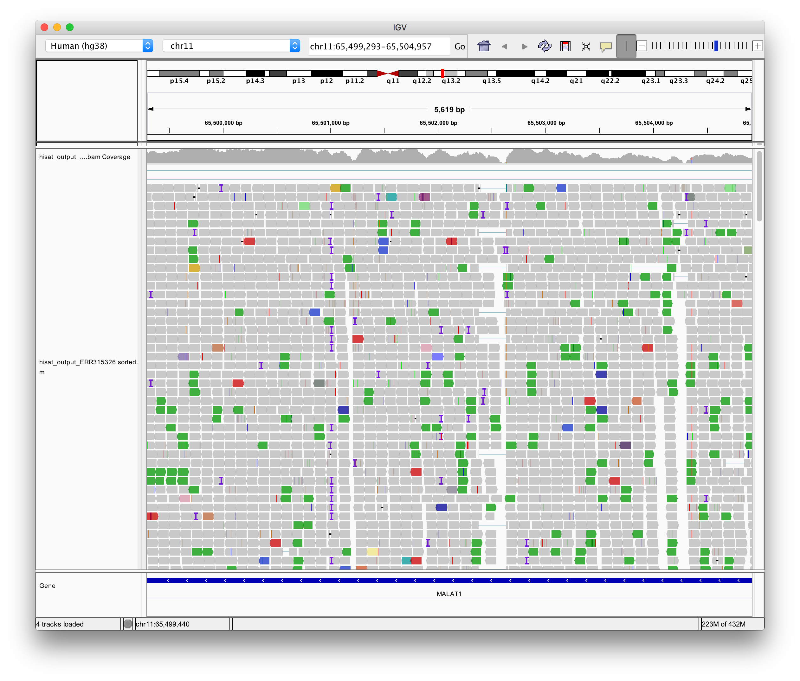

ゲノム解析ツールの環境構築で必要なツールを揃えたので、実際にThe Human Protein Atlasからデータを取得して、解析を行います。
なお、今回は "Uhlen M, Fagerberg L, Hallstrom BM, et al. Proteomics. Tissue-based map of the human proteome. Science. 2015;347(6220):1260419. doi:10.1126/science.1260419" でヒトの32種類の組織でRNA-seqを行なっていたため、そのデータを利用します。
解析の流れ
| # | 内容 | 利用するツール |
|---|---|---|
| 0 | 計算ノードを使用する準備 | |
| 1 | データの取得 | SRA Toolkit |
| 2 | 品質チェック | FastQC |
| 3 | マッピング | HISAT2 |
| 4 | IGVに必要なインデックスファイル作成 | samtools |
| 5 | マッピング結果の可視化 | IGV |
| 6 | リード数のカウント | featureCounts |
0. 計算ノードを使用する準備
qsubコマンドで、対話モードで計算ノードを使用したいので、以下のバッチスクリプトを作成します。
[j29XXX@reedbush-h1 j29XXX]$ mkdir qsub_sh
[j29XXX@reedbush-h1 j29XXX]$ cd qsub_sh/
[j29XXX@reedbush-h1 qsub_sh]$ vi interactive_h_qsub.sh
"""interactive_h_qsub.sh
#!bin/sh
#PBS -q h-interactive (使用する計算資源キュー名：h-interactiveはGPUあり。u-interactiveはGPUなし。)
#PBS -l select=1:ncpus=1:mpiprocs=1:ompthreads=8 (ノード数1、ノードあたりのMPIプロセス数1、プロセスあたりのスレッド数8)
#PBS -l walltime=2:00:00 (使用上限時間：2時間、u-interactiveの場合：30分)
#PBS -W group_list=gj29 (グループ名)
#PBS -I (対話型のジョブ)
"""※ なお、実際にツールを実行する際には、これと同じ値を引数として設定する。
1. データの取得
データの形式として、以下のものが主要ですが、ここではDRAから sra ファイルを取得し、これを SRA Toolkit を使って fastq ファイルに変換します。
[j29XXX@reedbush-h1 j29XXX]$ mkdir RNA
[j29XXX@reedbush-h1 j29XXX]$ cd RNAseq/
# id: ERR315326のデータを取得する。
[j29XXX@reedbush-h1 RNAseq]$ wget ftp://ftp.ddbj.nig.ac.jp/ddbj_database/dra/sralite/ByExp/litesra/ERX/ERX288/ERX288491/ERR315326/ERR315326.sra
[j29XXX@reedbush-h1 RNAseq]$ ls
ERR315326.sra # これが見えていれば良い。
[j29XXX@reedbush-h1 RNAseq]$ qsub ../qsub_sh/interactive_h_qsub.sh
qsub: waiting for job 1804938.reedbush-pbsadmin0 to start
qsub: job 1804938.reedbush-pbsadmin0 ready
[j29XXX@a089 RNAseq]$ fasterq-dump ERR315326.sra -v --threads 8 --split-files -O ./
spots read : 8,782,257
reads read : 17,564,514
reads written : 17,564,514
[j29XXX@a089 RNAseq]$ ls
ERR315326.sra ERR315326.sra_1.fastq ERR315326.sra_2.fastqなお、ここで fasterq-dump のオプションは以下を表します。
| オプション | 説明 |
|---|---|
-v |
履歴の表示 |
--threads |
使用するスレッド数（バッチスクリプトに記載した値に合わせる。） |
--split-files |
paired-endのリードを別々のファイルに出力する。 |
-O |
出力先のディレクトリ |
また、作成されたfastq形式のファイルは以下のように4行で1つの配列データを表しています。
- データのID シーケンサの機械・フローセル等の情報/リードペアの番号
- シーケンサーから得られた塩基配列
- ＋（1行目と同じ文字列が入っていることもある）
- 2行目の塩基配列の各塩基のクオリティスコア（\(Q=-10\log_{10}P_{\text{error}}\)）
@ERR315326.sra.1 HWI-ST1362:39:H07R5ADXX:2:1101:1520:2188 length=101
CACTGAAGCAGGACAACGGACGTCTCCAATGCACCGCACAGGAACGGGCCCCCAGAGCTCGCACCCTCCGCCACACAGCACGCCCGGCAGCCTTTGGTGTC
+ERR315326.sra.1 HWI-ST1362:39:H07R5ADXX:2:1101:1520:2188 length=101
BBBFFFFFFFFFFFIIIIIFFIIIFFFFIIFBFIFIFIIIFBFFFFIFFBFBBBBBBBBBBBBFBBBBFFBBBBBFFBBBB<<BBBFFFFFFFFFBB7BBB2. 品質チェック
シーケンス実験がどの程度正しく行われたかを調べるため、FastQC を用いてシーケンスの品質チェックを行います。
[j29XXX@a089 RNAseq]$ fastqc -t 8 ERR315326.sra_1.fastq ERR315326.sra_2.fastq
Started analysis of ERR315326.sra_1.fastq
Started analysis of ERR315326.sra_2.fastq
Approx 5% complete for ERR315326.sra_1.fastq
Approx 5% complete for ERR315326.sra_2.fastq
Approx 10% complete for ERR315326.sra_1.fastq
Approx 10% complete for ERR315326.sra_2.fastq
:
Approx 90% complete for ERR315326.sra_1.fastq
Approx 90% complete for ERR315326.sra_2.fastq
Approx 95% complete for ERR315326.sra_1.fastq
Approx 95% complete for ERR315326.sra_2.fastq
Analysis complete for ERR315326.sra_1.fastq
Analysis complete for ERR315326.sra_2.fastq
[j29XXX@a089 RNAseq]$ ls
ERR315326.sra_2_fastqc.html
ERR315326.sra_1_fastqc.htmlこれ作成できたhtmlファイルをブラウザで開くことで品質チェックが行えます。
なお、ここでsftpコマンドを使うと楽にファイルの移動が行なえます。
[iwasakioshuto@shuto-MacBook-Pro]$ sftp j29XXX@reedbush.cc.u-tokyo.ac.jp
sftp> get /lustre/gj29/j29XXX/RNAseq/ERR315326.sra_*_fastqc.html
sftp> exit
[iwasakioshuto@shuto-MacBook-Pro]$ ls
ERR315326.sra_2_fastqc.html
ERR315326.sra_1_fastqc.html出力結果は以下のようになりました。
3. マッピング
マッピングをする際には、まずリファレンスゲノムを取得する必要があります。これは、 ~~wget https://cloud.biohpc.swmed.edu/index.php/s/grch38/download とやってもうまくいかなかったので、~~ wget --content-disposition https://cloud.biohpc.swmed.edu/index.php/s/grch38/download とやればおそらくうまくいきます。
https://cloud.biohpc.swmed.edu/index.php/s/grch38/download を直接ローカル環境でクリックしてダウンロードし、sftp で転送するという形をとりました。
[iwasakioshuto@shuto-MacBook-Pro]$ tar -zxvf grch38.tar.gz
[iwasakioshuto@shuto-MacBook-Pro]$ sftp j29XXX@reedbush.cc.u-tokyo.ac.jp
sftp> put -r grch38 /lustre/gj29/j29XXX/grch38
Uploading grch38/ to /lustre/gj29/j29XXX/grch38
sftp> exitこれでデータの転送ができたので、reedbush側でマッピングを行います。
[j29XXX@reedbush-h1 j29XXX]$ mkdir db
[j29XXX@reedbush-h1 j29XXX]$ mv /lustre/gj29/j29XXX/grch38 /lustre/gj29/j29XXX/db/grch38
[j29XXX@reedbush-h1 j29XXX]$ cd qsub_sh
[j29XXX@reedbush-h1 qsub_sh]$ qsub ./interactive_h_qsub.sh
qsub: waiting for job 1805079.reedbush-pbsadmin0 to start
[j29XXX@a091 ~]$ cd RNAseq/
[j29XXX@a091 RNAseq]$ time hisat2 -x ../db/grch38/genome -1 ERR315326.sra_1.fastq -2 ERR315326.sra_2.fastq -p 8 -S hisat_output_ERR315326.sam
8782257 reads; of these:
8782257 (100.00%) were paired; of these:
2765587 (31.49%) aligned concordantly 0 times
5647701 (64.31%) aligned concordantly exactly 1 time
368969 (4.20%) aligned concordantly >1 times
----
2765587 pairs aligned concordantly 0 times; of these:
345148 (12.48%) aligned discordantly 1 time
----
2420439 pairs aligned 0 times concordantly or discordantly; of these:
4840878 mates make up the pairs; of these:
3942560 (81.44%) aligned 0 times
807875 (16.69%) aligned exactly 1 time
90443 (1.87%) aligned >1 times
77.55% overall alignment rate
real 2m24.673s
user 16m27.784s
sys 1m9.225s
[j29XXX@a091 RNAseq]$ ls
hisat_output_ERR315326.sam
hisat_output_ERR315326.bam4. IGVに必要なインデックスファイル作成
ここでは、以下の操作を行い、マッピング結果（.sam,.bam）をIGVで取り扱える形に変換します。
- SAMの詳しい定義: http://samtools.github.io/hts-specs/SAMv1.pdf
- HISAT2のSAM形式の説明: https://ccb.jhu.edu/software/hisat2/manual.shtml#sam-output
※Bamはバイナリ形式、samはテキスト形式
[j29XXX@a091 RNAseq]$ samtools view --threads 8 -b hisat_output_ERR315326.sam -o hisat_output_ERR315326.bam
[j29XXX@a091 RNAseq]$ samtools sort --threads 8 hisat_output_ERR315326.bam -o hisat_output_ERR315326.sorted.bam
[bam_sort_core] merging from 0 files and 8 in-memory blocks...
[j29XXX@a091 RNAseq]$ samtools index -@ 8 hisat_output_ERR315326.sorted.bam
[j29XXX@a091 RNAseq]$ ls
hisat_output_ERR315326.sorted.bam
hisat_output_ERR315326.sorted.bam.baisamtools view：SAM形式（テキスト）をBAM形式（バイナリ）に変換（-b: bam形式で出力 –o:出力先）samtools sort：BAM形式のマッピング結果をゲノム上の位置でソートする（–o:出力先）samtools index：IGV（ビューワ）用のインデックスファイル（.bai）を作成
目的のファイルが作成できたので、ローカル環境にファイルを転送します。
[iwasakioshuto@shuto-MacBook-Pro]$ sftp j29XXX@reedbush.cc.u-tokyo.ac.jp
sftp> get /lustre/gj29/j29XXX/RNAseq/hisat_output_ERR315326.sorted.*
sftp> exit5. マッピング結果の可視化
IGVでゲノムをhg38に設定し、bamファイルをロードすれば、以下のようなマッピング結果が確認できます。
| actin beta (ACTB) | MALAT1 |
|---|---|
|  |
6. リード数のカウント
- マッピングで作成した、マップされたリードの位置情報が記載されたSAMファイル（ソートされる前のbamファイル）
- ゲノム上の遺伝子の位置情報（GTF形式。今回はヒトの遺伝子アノテーションをGENCODEから取得）
の２つを、featureCountsを使って比較し、リード数のカウントを行い、遺伝子の発言量算出に繋げます。なお、featureCountsでは、
- feature領域（exonがデフォルト）をカウントの対象とし、meta-feature（gene_idがデフォルト）ごとにカウント集計を行う。
- isoformは、遺伝子レベルであれば、最低１つのisoformでexonである領域でカウントする。
- overlap・Multi-mapped readsに関しては、
- カウントしない
- デフォルトの動作。
- 開発者曰く "multi-mapping reads should be excluded from read counting"
- 各遺伝子で1カウントとする
-M：multi-mapを許可-O：overlapを許可
- 1カウントを等分配する
--fraction- 上記の
-Mや-Oとセットで使用する
- EMアルゴリズムに基づいてリードを分配する
- featureCountsではできないのでRSEM等を用いる。
- カウントしない
となっており、各オプションは以下を表します。
| オプション | 説明 |
|---|---|
-p |
paired-endのデータ※リード2本で1カウント（1fragment） |
-t |
feature領域の指定 |
-g |
meta-feature領域の指定 |
-s |
ストランド情報の有無 |
-T |
スレッド数 |
-B |
pairの両リードがマップ |
-C |
pairが同じ染色体にマップ |
-O |
overlapを許可 |
-M |
multi-mapを許可 |
-a |
アノテーションファイル |
-O |
出力ファイル（テキスト形式） |
[j29XXX@reedbush-u3 j29XXX]$ wget ftp://ftp.ebi.ac.uk/pub/databases/gencode/Gencode_human/release_32/gencode.v32.annotation.gtf.gz
[j29XXX@reedbush-u3 j29XXX]$ gunzip gencode.v32.annotation.gtf.gz
[j29XXX@reedbush-u3 j29XXX]$ ls
gencode.v32.annotation.gtf
[j29XXX@reedbush-u3 j29XXX]$ mv gencode.v32.annotation.gtf db/
[j29XXX@reedbush-u3 j29XXX]$ cd RNAseq/
# overlap, multi-map をカウントしない場合
[j29XXX@reedbush-u3 RNAseq]$ featureCounts hisat_output_ERR315326.bam -p -t exon -g gene_id -s 0 -T 8 -BC -a ../db/gencode.v32.annotation.gtf -o Counts_BC_ERR315326.txt
# overlap, multi-map をそれぞれ1カウント
[j29XXX@reedbush-u3 RNAseq]$ featureCounts hisat_output_ERR315326.bam -p -t exon -g gene_id -s 0 -T 8 -MOBC -a ../db/gencode.v32.annotation.gtf -o Counts_MOBC_ERR315326.txtカウントが行えたので、TPM(Transcripts Per Million)の算出します。なお、TPMの算出方法は3S ゲノム配列解析論Ⅱ 第4回の講義内容に記載してあります。
[iwasakioshuto@shuto-MacBook-Pro]$ sftp j29XXX@reedbush.cc.u-tokyo.ac.jp
sftp> get /lustre/gj29/j29XXX/RNAseq/Counts_*BC_ERR315326.txt
sftp> exit
[iwasakioshuto@shuto-MacBook-Pro]$ ls
Counts_BC_ERR315326.txt
Counts_MOBC_ERR315326.txt
[iwasakioshuto@shuto-MacBook-Pro]$ python CalcuTPM.py -i Counts_BC_ERR315326.txt -c hisat_output_ERR315326.bam -l Length
[iwasakioshuto@shuto-MacBook-Pro]$ python CalcuTPM.py -i Counts_MOBC_ERR315326.txt -c hisat_output_ERR315326.bam -l Length
[iwasakioshuto@shuto-MacBook-Pro]$ ls
Counts_BC_ERR315326.txt
Counts_BC_ERR315326_with_TPM.txt
Counts_MOBC_ERR315326.txt
Counts_MOBC_ERR315326_with_TPM.txなお、ここで使用した CalcuTPM.py の中身は以下です。（ヘッダーの内容まで含めて形式を変えたくなかったので、少し余計な操作があります。）
#coding:utf-8
import argparse
import pandas as pd
if __name__ == "__main__":
parser = argparse.ArgumentParser()
parser.add_argument("-i", "--input", type=str, help="Please specify where the Counts file is.")
parser.add_argument("-c", "--absolute", type=str, help="Which column indicates absolute counts.", default="hisat_output_ERR315326.bam",)
parser.add_argument("-l", "--length", type=str, help="Which column indicates length", default="Length")
args = parser.parse_args()
output_path = "_with_TPM.".join(args.input.split("."))
with open(args.input, mode="r") as inputFile:
header = inputFile.readline()
# TPMの計算はここだけで完結
df = pd.read_csv(args.input, sep="\t", header=1)
df["RPKM"] = 1e6*df[args.absolute]/(df[args.length]*df[args.absolute].sum())
df["TPM"] = 1e6*df["RPKM"]/df["RPKM"].sum()
df.to_csv(output_path, index=False, sep="\t")
with open(output_path) as outputFile:
lines = outputFile.readlines()
lines.insert(0, header)
with open(output_path, mode='w') as f:
f.writelines(lines)